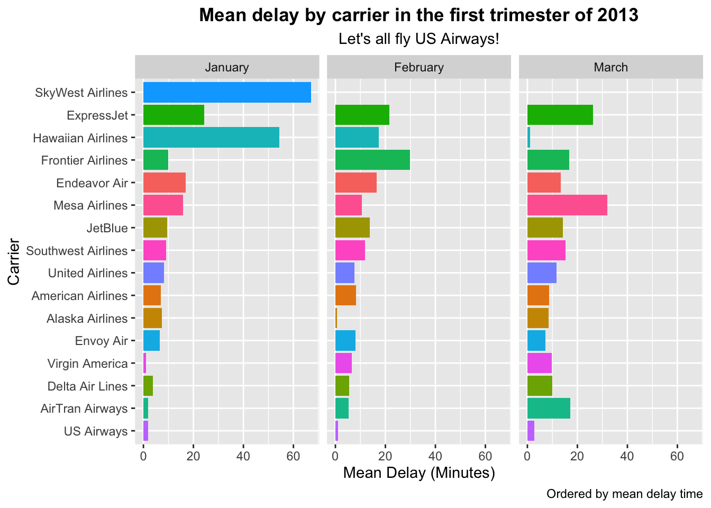
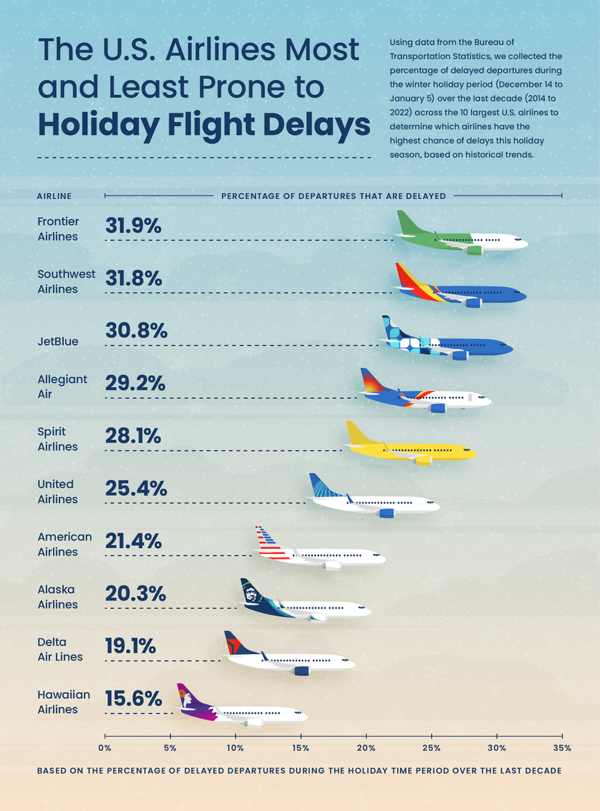
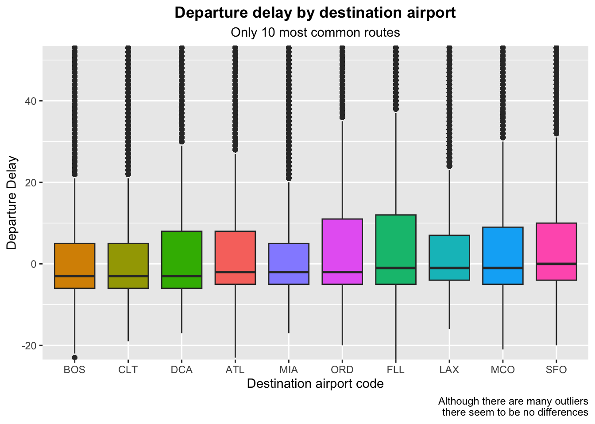
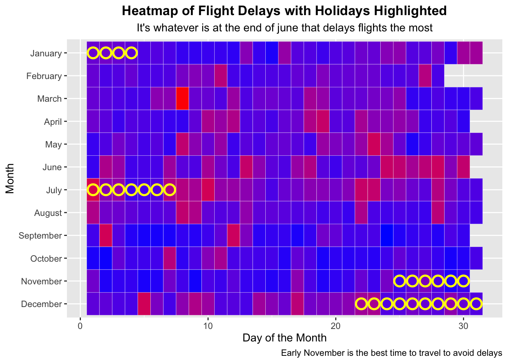

What are the main factors associated with flight delays for flights departing from NYC in 2013?
Intended Audience:
The analysis is intended for aviation enthusiasts interested in understanding patterns in flight delays.
Dataset:
The data comes from the nycflights13 R package, which documents over 300,000 flights departing from NYC airports (JFK, LGA, EWR) in 2013.
- Data source
- Data dictionary (Wickham, 2015)
The following objects are masked from 'package:stats':
filter, lag
The following objects are masked from 'package:base':
intersect, setdiff, setequal, union
library(tidyr)library(forcats)library(ggplot2)
#| label: results#| include: truedf <- flights#For data wrangling, I will create a data set in which we see for each airline, what the average delay was in each monthwrangled <- df %>%group_by(year, month, carrier) %>%summarize(mean_delay =mean(dep_delay, na.rm=TRUE),Q25 =quantile(dep_delay, na.rm=TRUE, probs=0.25),Q75 =quantile(dep_delay, na.rm=TRUE, probs =0.75)) %>%arrange(year, month, carrier) %>%ungroup() %>%mutate(carrier =fct_recode(carrier,"United Airlines"="UA","American Airlines"="AA","JetBlue"="B6","Delta Air Lines"="DL","ExpressJet"="EV","Envoy Air"="MQ","US Airways"="US","Southwest Airlines"="WN","Virgin America"="VX","AirTran Airways"="FL","Alaska Airlines"="AS","Endeavor Air"="9E","Frontier Airlines"="F9","Hawaiian Airlines"="HA","Mesa Airlines"="YV","SkyWest Airlines"="OO" ))
`summarise()` has grouped output by 'year', 'month'. You can override using the
`.groups` argument.
#Now let's see which of the airlines had the highest delay in the first trimester of 2013!wrangled %>%filter(year ==2013) %>%filter(month %in%c(1, 2, 3)) %>%mutate(month =factor(month, levels =c(1, 2, 3), labels =c("January", "February", "March"))) %>%ggplot(aes(x =fct_reorder(carrier, mean_delay), y = mean_delay, fill = carrier)) +geom_bar(stat ="identity") +labs(x ="Carrier", y ="Mean Delay (Minutes)", title ="Mean delay by carrier in the first trimester of 2013",subtitle ="Let's all fly US Airways!",caption ="Ordered by mean delay time") +coord_flip() +facet_grid(~ month) +theme(legend.position ="none",plot.title =element_text(hjust =0.5,face ="bold"),plot.subtitle =element_text(hjust=0.5))

Compared with this image from the internet, from 2023: 
##Mateo does not condone or endorse any of the airlines
Note
##Now let’s see if destination city could be a factor for delays
#| label: results2#| include: true#What are the most common destination cities?df %>%count(dest) %>%arrange(desc(n)) %>%slice_head(n=10)
# A tibble: 10 × 2
dest n
<chr> <int>
1 ORD 17283
2 ATL 17215
3 LAX 16174
4 BOS 15508
5 MCO 14082
6 CLT 14064
7 SFO 13331
8 FLL 12055
9 MIA 11728
10 DCA 9705
#New Yorkers have places to go!df %>%filter(dest %in%c("ORD", "ATL", "LAX", "BOS", "MCO", "CLT", "SFO", "FLL", "MIA", "DCA")) %>%ggplot(aes(x=fct_reorder(dest, dep_delay), y=dep_delay, fill=dest)) +geom_boxplot() +coord_cartesian(ylim=c(-20,50)) +labs(x="Destination airport code", y="Departure Delay", title ="Departure delay by destination airport",subtitle ="Only 10 most common routes", caption ="Although there are many outliers\n there seem to be no differences") +theme(legend.position ="none",plot.title =element_text(hjust =0.5,face ="bold"),plot.subtitle =element_text(hjust=0.5))
Warning: `fct_reorder()` removing 2846 missing values.
ℹ Use `.na_rm = TRUE` to silence this message.
ℹ Use `.na_rm = FALSE` to preserve NAs.
Warning: Removed 2846 rows containing non-finite outside the scale range
(`stat_boxplot()`).

Note
##Are the holidays associated to delays of over 20 minutes?
#Note: ChatGPT helped my write the function to determine if the date is a Holiday# Define major holidays in 2013 ( I did this)holidays <-data.frame(month =c(1, 7, 11, 12, 12),day =c(1, 4, 28, 25, 31), # New Year's, Independence Day, Thanksgiving, Christmas, New Year's Eveholiday_name =c("New Year", "Independence Day", "Thanksgiving", "Christmas", "New Year's Eve"))# Function to check if a date is within +/- 3 days of a holiday (ChatGPT did this)is_holiday <-function(month, day) {any(apply(holidays, 1, function(x) { x_month <-as.integer(x[1]) x_day <-as.integer(x[2])abs(day - x_day) <=3& month == x_month }))}# Add the holiday variable (I did this)df <- df %>%mutate(holiday =ifelse(mapply(is_holiday, month, day), "Yes", "No"))# I calculate the mean delay for each day, and mark which are holidaysflights_summary <- df %>%group_by(month, day) %>%summarize(avg_delay =mean(dep_delay, na.rm =TRUE),holiday =ifelse(any(holiday =="Yes"), "Yes", "No"))
`summarise()` has grouped output by 'month'. You can override using the
`.groups` argument.
# Now I make a heatmap of delays, and circle the Holiday seasons we createdggplot(flights_summary, aes(x = day, y =factor(month, levels =12:1, labels=rev(month.name)), fill = avg_delay)) +geom_tile(color ="white") +scale_fill_gradient(low ="blue", high ="red") +labs(x ="Day of the Month", y ="Month", fill ="Avg Delay (mins)", title ="Heatmap of Flight Delays with Holidays Highlighted",subtitle ="It's whatever is at the end of june that delays flights the most",caption ="Early November is the best time to travel to avoid delays") +theme(legend.position ="none",plot.title =element_text(hjust =0.5,face ="bold"),plot.subtitle =element_text(hjust=0.5))+geom_point(data = flights_summary %>%filter(holiday =="Yes"),aes(x = day, y =factor(month, levels =12:1, labels =rev(month.name))),color ="yellow", shape =21, size =4, stroke =1.5) # Highlight holidays (Chat GPT helped me add these circles, but I did the rest)

Note
Hey TA: This is what I used:
Your analysis must include some minimal form of data wrangling with you using at least five different functions from dplyr or tidyr.
For this, I created the wrangled data using dplyr’s group_by(), summarize(), arrange(), ungroup(), and mutate()
Your analysis should include at least three plots with you using at least three different geom_() functions from ggplot2 (or another package with geom_() functions).
For this I used geom_bar(), geom_boxplot(), geom_tile(), and geom_point()
At least one plot should using a type of faceting (facet_grid() or facet_wrap()).
For my first plot I faceted by month using facet_grid()
Your analysis must include one image or table (not one you created yourself, but one you have saved locally or one from the web).
I included the infographic with the delays
Your analysis must include at least two different callout blocks.
I included at least 3
Your analysis must include a .bib file, which you use to reference at least three unique citations. For example, it could be to a website or paper from where the original data came from or it could be to a paper describing a method you are using to analyze the data.
I used a .bib and a .csl, I included three inline citations, and the references are at the end of the document
Your analysis must include the use of at least 1 margin content.
I have included a margin picture of my cat, for your viewing pleasure